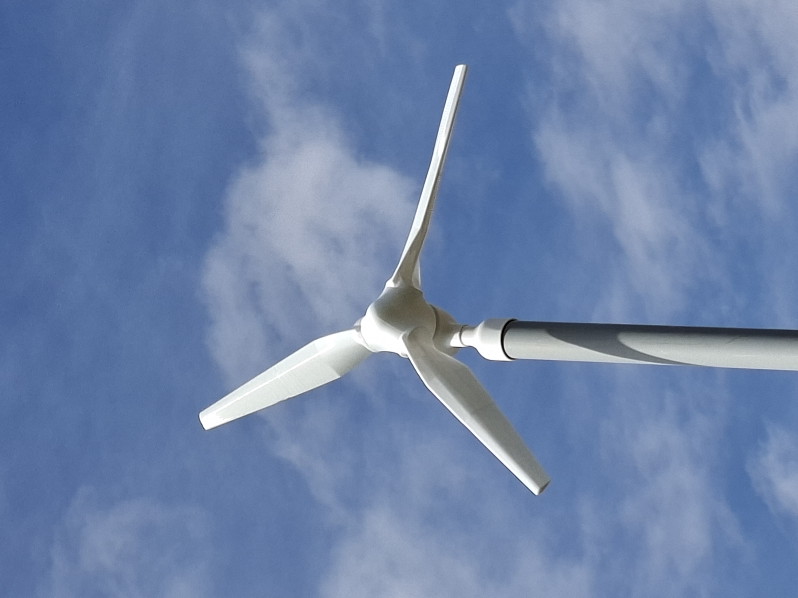
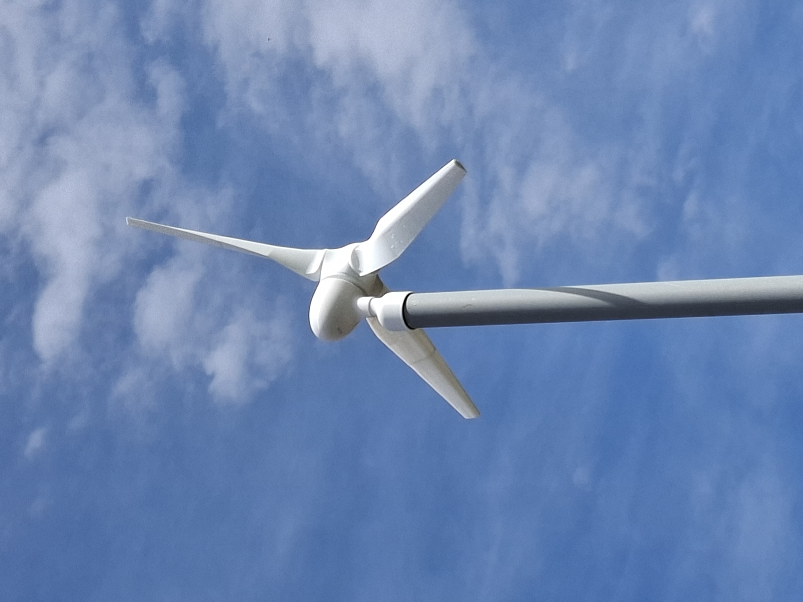
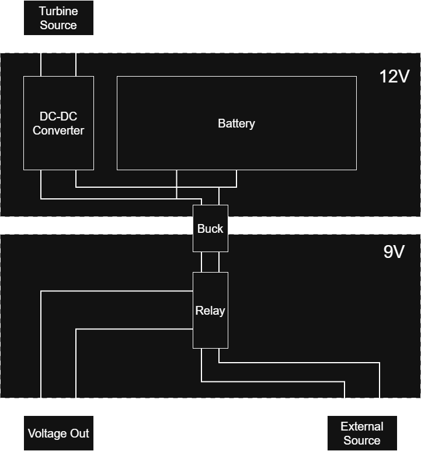

███████╗██╗ ██╗██╗ ██╗ ██████╗██╗ ██╗ ██████╗ ██████╗ ██████╗ ███████╗██████╗
██╔════╝██║ ██╔╝╚██╗ ██╔╝██╔════╝██║ ██║██╔═══██╗██╔══██╗██╔══██╗██╔════╝██╔══██╗
███████╗█████╔╝ ╚████╔╝ ██║ ███████║██║ ██║██████╔╝██████╔╝█████╗ ██████╔╝
╚════██║██╔═██╗ ╚██╔╝ ██║ ██╔══██║██║ ██║██╔═══╝ ██╔═══╝ ██╔══╝ ██╔══██╗
███████║██║ ██╗ ██║ ╚██████╗██║ ██║╚██████╔╝██║ ██║ ███████╗██║ ██║
╚══════╝╚═╝ ╚═╝ ╚═╝ ╚═════╝╚═╝ ╚═╝ ╚═════╝ ╚═╝ ╚═╝ ╚══════╝╚═╝ ╚═╝
Wind Turbine
The turbine was designed and built over March, April, and May of 2026, with each stage refined through hands-on assembly, testing, and iteration.
Design
The turbine utilizes a dual-power approach, seamlessly switching between the primary source power and a battery charged by the wind turbine to ensure consistent operation. The design combines custom 3D-printed mechanical structures with a custom PCB hosting an Arduino Nano and Raspberry Pi Zero 2W. The Arduino measures current and serves as a sacrificial protection layer, while the Raspberry Pi executes computational logic and hosts a web server for system monitoring and data visualization.
Mechanical Layout
The mechanical layout uses custom 3D-printed parts to support the turbine blades, generator, and structural frame. The arrangement keeps cabling neat and maintains clear access to the control electronics while also providing stable airflow around the rotor.


Electrical Layout
The system architecture employs a custom PCB that integrates an Arduino Nano and Raspberry Pi Zero 2W. The Arduino serves dual roles: measuring current generation from the turbine and acting as a sacrificial protection layer to safeguard the more critical Raspberry Pi in the event of voltage spikes or fault conditions.
Power flow begins with the turbine output passing through a DC-DC converter that boosts the voltage to a constant 12.6V for charging the battery connected to the output rails. This same rail is shared with a Buck converter that steps down the voltage to 9V for system operation. A normally-open/normally-closed (NO/NC) relay switches between source power and battery power, with the source configured as normally-open to ensure safe operation in case of relay failure.

The Raspberry Pi continuously measures voltage across three critical points: the battery rails, the output of the Buck converter (9V rail), and the source input. Based on these measurements, the Pi dynamically switches between power sources to optimize system reliability and battery charging efficiency. Specific voltage thresholds and switching logic are defined in the SkyChopper repository.
Web UI
The web interface provides real-time monitoring of the wind turbine system, displaying current generation metrics, battery status, and power consumption data through a responsive dashboard accessible from any connected device.
GitHub RepositoryResults
Testing of the wind turbine system demonstrated variable power generation across different wind conditions. The turbine's output voltage scales with wind speed, providing a direct correlation between environmental conditions and harvested energy.
| Wind Condition | Wind Speed | Output Voltage |
|---|---|---|
| Low Wind | ~15 km/h | 4–6 V |
| High Wind | 20–30 km/h | 12–13 V |
| Gust Peaks | Up to 40 km/h | 16.25 V (max) |
The DC-DC converter successfully regulated the turbine output to maintain a constant 12.6 V on the battery charging rails across the tested wind speed range. The system reliably managed transient voltage peaks during wind gusts, demonstrating robust protection and stable operation throughout field testing.